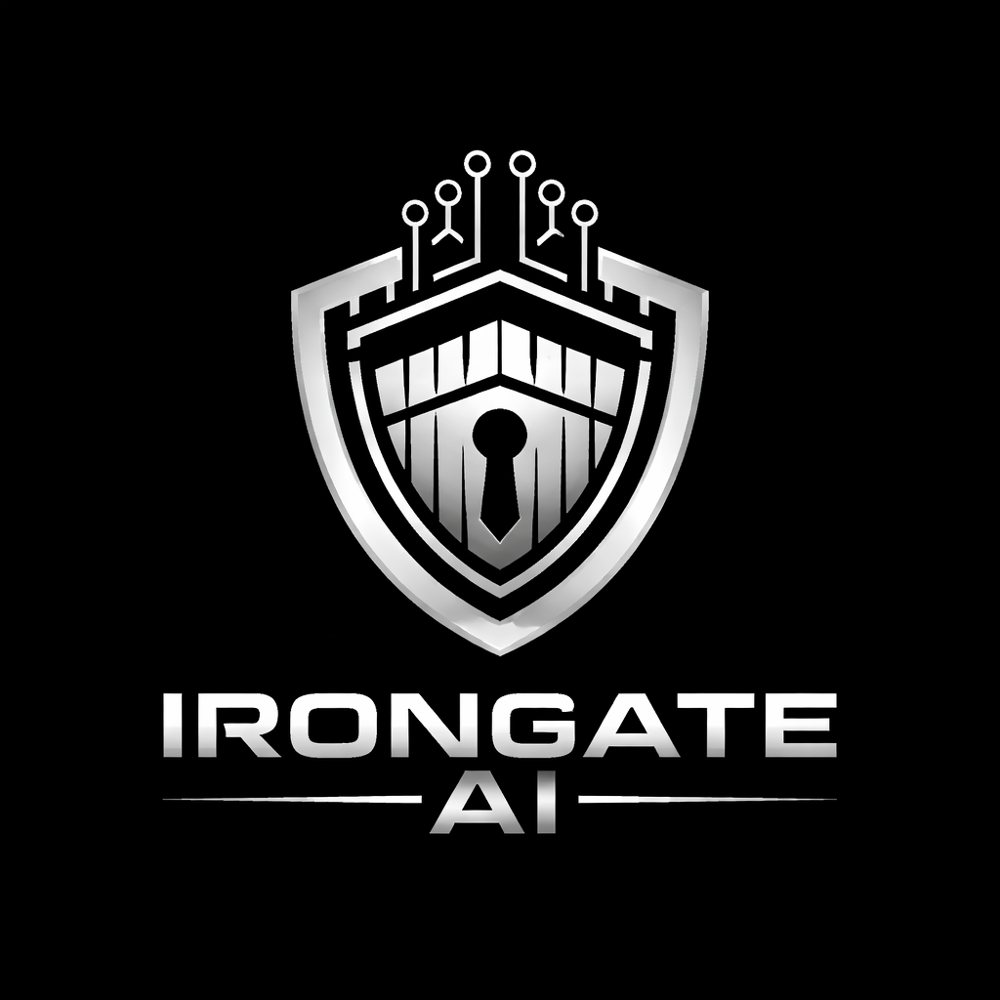

Cybersecurity & AI Risk Consulting
IronGate AI is a New England–based cybersecurity consulting company with more than 15 years of experience in the cybersecurity industry. Our expertise includes network architecture review, penetration testing, vulnerability scanning, disaster recovery planning, and digital forensics.
We combine proven cybersecurity practices with modern artificial intelligence insights to help organizations better understand and defend against emerging threats.
As a local New England company headquartered in Rochester, New Hampshire, IronGate AI is committed to bringing advanced cybersecurity and AI-driven intelligence to businesses throughout the region. Our mission is to make enterprise-grade security expertise accessible to both small and large organizations across New England.